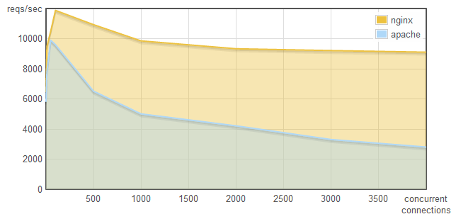
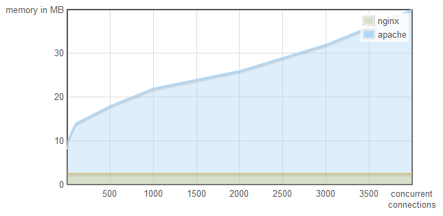
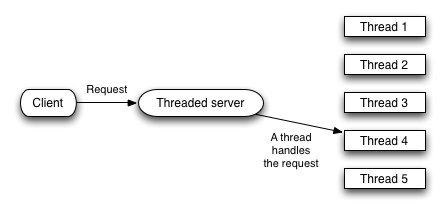
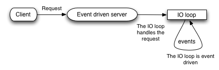

非阻塞服务器有一个严重的问题，一些人甚至在没解决这个问题的背景下就开发自己的应用框架（比如 Python 的 Tornado）
当你使用非阻塞服务器的时候，你会获得出色的性能并且不需要担心可扩展性，然而同时你需要意识到一个问题：你的IO调用、网络系统调用也都是非阻塞的吗？很多人忽略了，他们使用的非阻塞服务器，其实是构建在阻塞库之上的。
在这篇文章里，我将深入对比多线程的服务器与非阻塞的服务器分别是如何工作的，以及你之所以需要在"使用的服务器"与"使用的库"在阻塞模式上保持一致的原因。
Non-blocking servers perform better
首先，我不会否认非阻塞服务器比阻塞服务器有更好的性能，尤其在那些有着数以万计的高并发用户的应用场景中。下面通过一些图片对说明这个问题，这些图片是WebFaction所测试的结果：
Nginx每秒可以处理更多的请求：

Nginx比Apache使用更少的内存：

真是令人吃惊的结果，那么为何不把非阻塞技术引入到你的 Python/Java/Ruby/PHP 框架里呢？
How blocking servers work
阻塞式服务器通常是基于多线程的，一个线程处理一个请求，它的工作方式可以现象化地表示为：

关于阻塞式服务器，有如下事实：
- 处理高并发连接请求代价昂贵，服务器需要量产线程——线程并不便宜。
- 库函数需要线程安全，这是多线程环境必需的。
How non-blocking servers work
非阻塞服务器不需要多线程，它通过一个IO循环及(异步)事件来处理请求，它的工作方式如下：

关于非阻塞式服务器，有如下事实：
- 处理高并发连接请求不是困难，这也是它被用于comet技术的重要原因
- 在IO循环中的所有操作都必须是非阻塞，否则会因为你一个操作而阻断了整个循环
- 不需要线程安全
Where Tornado (and others) go wrong
我以Tornado为例，但是其它的非阻塞式应用存在相同的问题。
Tornado使用了非阻塞式的服务器，但他们同时使用的库是阻塞式的，于是：
- Tornado关于Mysql连接的库是阻塞的，这意味如果你的查询需要1s，那么你的loop循环就需要停下来1s等待查询的完成
- 不要使用昂贵的系统调用，它会卡住整个循环
- 同样，不要在循环中渲染模板，原因同上
就像我之前提过的，阻塞整个loop是致命的，因为此时你什么也做不了！
Conclusion
总之，非阻塞技术精巧且性能卓越，但要正确运用此技术，你必须使用同样是阻塞式的IO和Network调用，否则你将后患无穷！还有，请注意Python, Ruby, Java or PHP等这些语言缺省都是阻塞式的，所以当你同时使用非阻塞的服务器和这些语言其中之一的话，请务必当心！